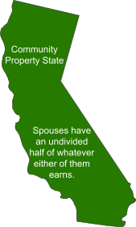
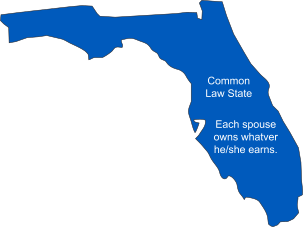

The Nature of Community Property
In a nutshell, here is the key difference between the community property states and common law states:


With certain exceptions, everything received by a husband and wife while residing in a community property state is considered to be owned 50-50. While this seems consistent with the outcome of most divorce settlement cases in common law states, where assets are frequently split 50-50, such similarity has more to do with the court seeking an equitable solution than with property law. Note: In Alaska, rather than community property being the default position for spouses, the spouses must opt for community property treatment.
Examples of Community Property
All of the following are community property:
- Salaries earned by either spouse during marriage.
- Items purchased with money earned by either spouse during marriage.
- Income generated by community property.
- In some states, income generated by separate property. Texas is an example of a state where this is the case.
- Commingled purchases and accounts. It is possible to purchase property or open accounts with a combination of community funds and separate funds, and have a representative portion retain its character as separate property. But if the funds have become so commingled that it is no longer possible to distinguish them, then everything becomes community property. This is why good records can be so important.
Exceptions to Community Property
The following are exceptions to community property, whereby each spouse owns property separately from the other spouse, which will be 100% included in the estate of the individual spouse owning it:
- Property acquired prior to marriage. However it was titled before marriage, as solely owned or jointly owned, it retains the same status after marriage.
- Property acquired prior to moving into a community property state. If a couple moves into a community property state from a non-community property state, then any property acquired prior to the move will generally retain its prior status.
- Gifts and inheritances to one spouse during marriage. If the gift or inheritance is specifically to one spouse and not the other, then the property retains its status as gifted or inherited.
- Compensation for personal injuries during marriage. Such compensation is generally treated as separate property.
- Property purchased during marriage with separate property will itself be separate property.
- In some states, income generated by separate property. California is an example of a state where this is the case.